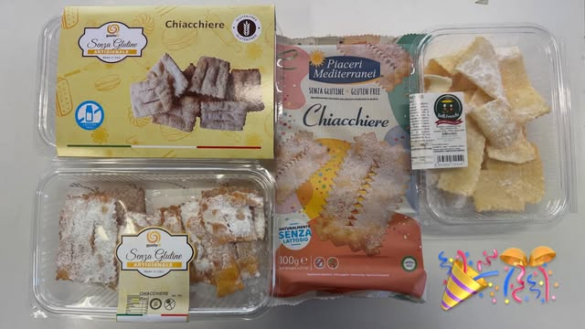
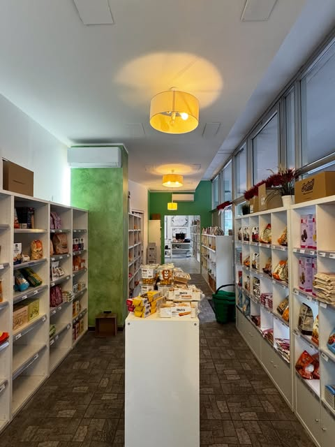
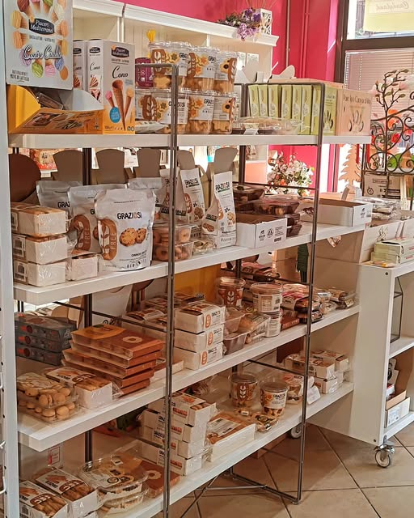
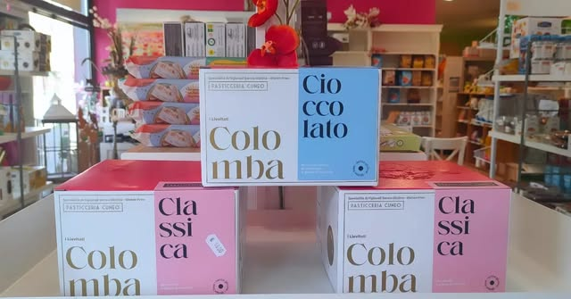

01 /Il risveglio più dolce
Biscotti e dolci: scopri in negozio le proposte per le tue pause.
Due negozi pieni di cose buone, colori e idee per la tua tavola. Prodotti senza glutine e per intolleranze alimentari: ti aspettiamo a Bovisio-Masciago e Seregno.

Dalla colazione alla cena, un mondo senza glutine da scoprire. Chiedici in negozio quali prodotti sono disponibili.

01 /Biscotti e dolci: scopri in negozio le proposte per le tue pause.

02 /Pasta, pane fresco, farine e prodotti per la dispensa: tutto il gusto per la tua tavola. Chiedici le disponibilità in negozio.

03 /Panettoni e pandori senza glutine disponibili per rendere più dolci le feste. Scrivici per conoscere assortimento e disponibilità.
Foto dai profili Instagram dei nostri negozi. L’assortimento varia in base alla stagione e alla disponibilità.
Dai prodotti per la dispensa alle dolci tentazioni, i nostri scaffali raccontano un mondo di possibilità senza glutine. Un negozio da vivere, una confezione da scoprire, una nuova idea da portare a casa.
Due punti vendita in Brianza, a Bovisio-Masciago e Seregno. Scegli quello più vicino a te e vieni a conoscere il nostro mondo senza glutine.
Trova la tua Casa Senza Glutine ↗Scegli il tuo punto vendita. Sui nostri profili Instagram trovi novità e aggiornamenti: scrivici per conoscere orari e disponibilità.
Corso Milano 105 · Bovisio-Masciago
Il tuo negozio di prodotti senza glutine e per intolleranze alimentari.
Via Edison 70/E · Seregno
Il tuo negozio di prodotti senza glutine e per intolleranze alimentari.